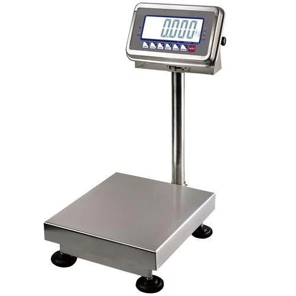
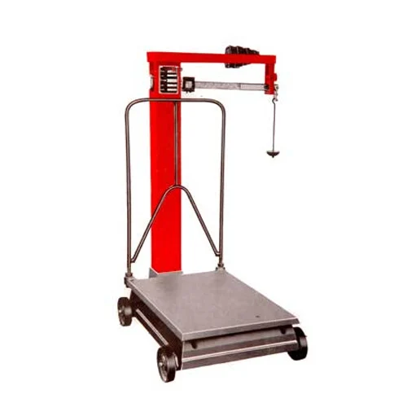
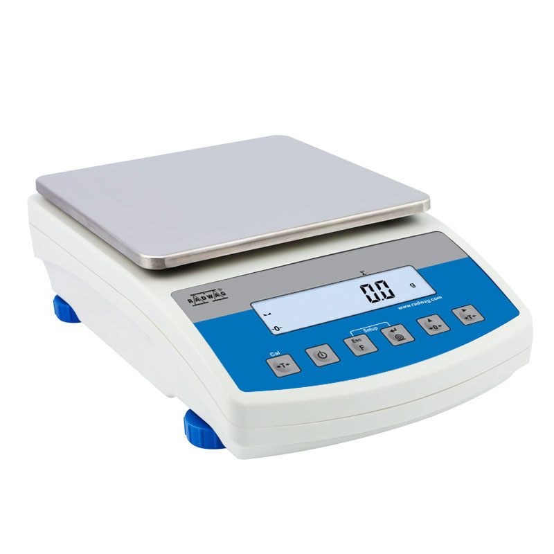
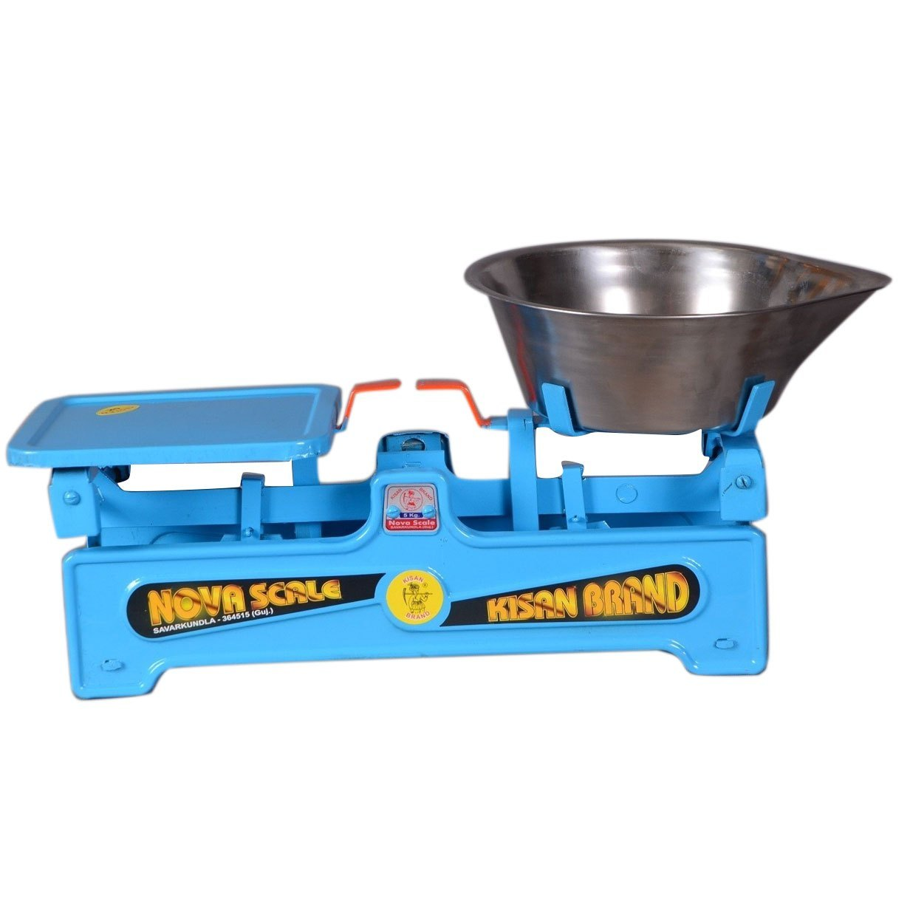
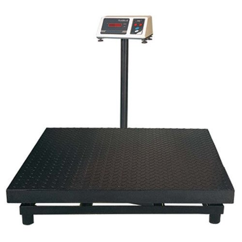
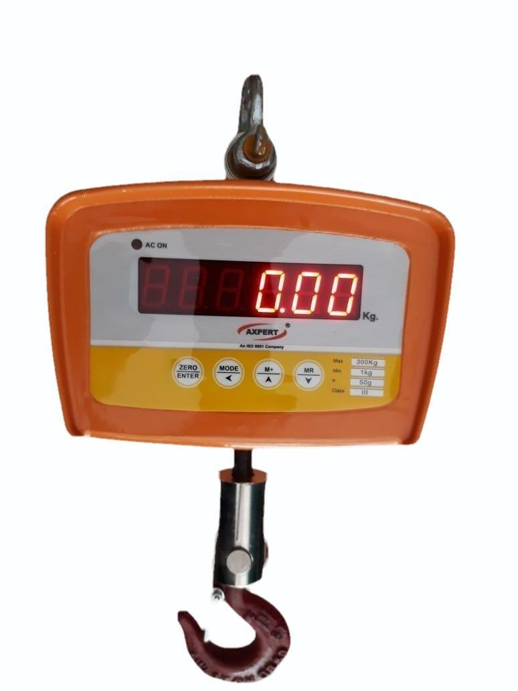

Our Products
We offer a wide range of high-quality electronic and manual weighing machines to suit diverse needs. Below are some examples of the types of products we sell and service:

Electronic Bench Scale
Ideal for retail counters, kitchens, and small workshops.

Mechanical Platform Scale
Durable and reliable for warehouses, agriculture, and industrial use.

Precision Balance
High-accuracy scales for laboratories, jewelers, and precise measurements.

Manual Counter Scale
Classic and robust scales often used in traditional markets and shops.

Heavy-Duty Industrial Scale
Built for demanding environments and heavy loads.

Electronic Hanging Scale
Convenient for weighing items that can be suspended, like produce or luggage.Note: This is just a sample of our offerings. Please contact us to discuss specific models, features, capacities, and availability based on your requirements. Images are for representation only.